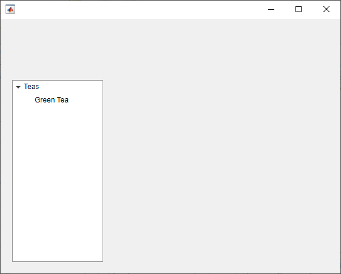
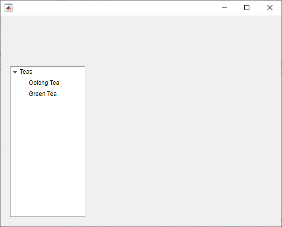

uitreenode
Create tree node component
Syntax
Description
node = uitreenodeTreeNode object. MATLAB® calls the uifigure function to create the
figure.
node = uitreenode(parent)Tree or TreeNode object.
node = uitreenode(___,Name,Value)TreeNode property values using one or more
Name,Value pair arguments. Specify
Name,Value as the last set of arguments when you use any of
the previous syntaxes.
Examples
Create a tree that contains a parent node called Sample
Data with a child node called Sample 1.
Expand the tree to see both nodes.
fig = uifigure; t = uitree(fig); parent = uitreenode(t,"Text","Sample Data"); child = uitreenode(parent,"Text","Sample 1"); expand(t)

Create a tree with a parent and child node. Expand the tree to see both nodes.
fig = uifigure; t = uitree; p = uitreenode(t,"Text","Teas"); c1 = uitreenode(p,"Text","Green Tea"); expand(t);

Add a new child node to the tree above the c1
node.
c2 = uitreenode(p,c1,"before","Text","Oolong Tea");

Create an app that displays athlete names grouped by sport. When the app user clicks on a name, MATLAB displays data about the athlete.
Create a program file called mytreeapp.m that contains the following commands to create a tree, a set of nested tree nodes, and a callback function for the tree. The SelectionChangedFcn property specifies the function to execute when the user clicks a node in the tree.
function mytreeapp fig = uifigure; t = uitree(fig,"Position",[20 20 150 150]); % Assign callback in response to node selection t.SelectionChangedFcn = @nodechange; % First level nodes category1 = uitreenode(t,"Text","Runners","NodeData",[]); category2 = uitreenode(t,"Text","Cyclists","NodeData",[]); % Second level nodes. % Node data is age (y), height (m), weight (kg) p1 = uitreenode(category1,"Text","Joe","NodeData",[40 1.67 58] ); p2 = uitreenode(category1,"Text","Linda","NodeData",[49 1.83 90]); p3 = uitreenode(category2,"Text","Rajeev","NodeData",[25 1.47 53]); p4 = uitreenode(category2,"Text","Anne","NodeData",[88 1.92 100]); % Expand the tree expand(t); % Create the function for the SelectionChangedFcn callback % When the function is executed, it displays the data of the selected item function nodechange(src,event) node = event.SelectedNodes; display(node.NodeData); end end
When the user runs mytreeapp and clicks a node in the tree, MATLAB displays the NodeData for that node.

Style nodes in a tree that showcases a file structure to visually distinguish different file types.
Create a tree UI component. Each top-level node represents a folder. Each child node represents a file in that folder. Expand the tree to see all the nodes.
fig = uifigure("Position",[300 300 350 400]); t = uitree(fig); % Parent nodes n1 = uitreenode(t,"Text","App 1"); n2 = uitreenode(t,"Text","App 2"); n3 = uitreenode(t,"Text","Images"); % Child nodes n11 = uitreenode(n1,"Text","myapp1.m"); n21 = uitreenode(n2,"Text","myapp2.m"); n22 = uitreenode(n2,"Text","app2callback.m"); n31 = uitreenode(n3,"Text","peppers.png"); expand(t)

Create three styles: one with a bold font weight, one with an italic font angle, and one with an icon.
dirStyle = uistyle("FontWeight","bold"); mStyle = uistyle("FontAngle","italic"); imgStyle = uistyle("Icon","peppers.png");
Apply the bold style to the top-level nodes to distinguish the nodes that
represent folders. Apply the italic style to the children of the App
1 and App 2 nodes to distinguish the nodes that
represent MATLAB program files. Finally, apply the icon style to the node that
represents an image file to show a preview of the image.
addStyle(t,dirStyle,"level",1) addStyle(t,mStyle,"node",[n1.Children;n2.Children]) addStyle(t,imgStyle,"node",n31)

Create a tree that populates nodes based on the data in a table.
Create a figure with a grid layout manager to hold the UI components. Load sample data on electric utility outages and create a table UI component to display the data. Then, create a tree to hold nodes listing the regions and causes of the outages.
fig = uifigure;
gl = uigridlayout(fig,[1 2]);
gl.ColumnWidth = {'2x','1x'};
T = readtable("outages.csv");
T = T(1:20,["Region","OutageTime","Loss","Cause"]);
tbl = uitable(gl,"Data",T);
tr = uitree(gl);Specify the table variables to display in the tree. For each of those variables, create
a top-level node whose text is the variable name. Extract the relevant data by converting
the table entries for the variable to a categorical array and returning the list of
categories as names. Then, loop through the categories. For each element,
add a node to the tree under the appropriate parent node.
vars = ["Region","Cause"]; for k1 = 1:length(vars) var = vars{k1}; varnode = uitreenode(tr,"Text",var); rows = T{:,var}; names = categories(categorical(rows)); for k2 = 1:length(names) text = names{k2}; uitreenode(varnode,"Text",text); end end
Expand the tree to see all the nodes.
expand(tr)

Create a context menu for a tree component. Assign the context menu to all of the top-level nodes in the tree.
In a new script in your current folder, create a UI figure. Then, create a tree with four top-level nodes and a set of nested nodes.
fig = uifigure; t = uitree(fig,"Position",[20 200 175 100]); category1 = uitreenode(t,"Text","Runners"); r1 = uitreenode(category1,"Text","Joe"); r2 = uitreenode(category1,"Text","Linda"); category2 = uitreenode(t,"Text","Cyclists"); c1 = uitreenode(category2,"Text","Rajeev"); category3 = uitreenode(t,"Text","Hikers"); h1 = uitreenode(category3,"Text","Jack"); category4 = uitreenode(t,"Text","Swimmers"); s1 = uitreenode(category4,"Text","Logan");

Create a context menu with one menu item and two submenus that users can
click to expand a single tree node or all of the tree nodes. For each
submenu, specify a MenuSelectedFcn callback function to
execute when a user selects the menu option. Pass the relevant app object as
input to each function to access app data from within the callback
function.
cm = uicontextmenu(fig); m1 = uimenu(cm,"Text","Expand..."); sbm1 = uimenu(m1,"Text","This Node", ... "MenuSelectedFcn",{@expandSingle,fig}); sbm2 = uimenu(m1,"Text","All Nodes", ... "MenuSelectedFcn",{@expandAll,t});
Assign the context menu to the top-level tree nodes by setting the
ContextMenu property of each node to the
ContextMenu object.
category1.ContextMenu = cm; category2.ContextMenu = cm; category3.ContextMenu = cm; category4.ContextMenu = cm;
At the bottom of the file, define the expandSingle and
expandAll callback functions. Define the functions to
accept the source and event data that MATLAB passes to all callback functions.
Define the expandSingle function to also accept the UI
figure object containing the tree, and use the
CurrentObject property of the figure to determine
which tree node was clicked to bring up the context menu. Then, expand that
node.
Define the expandAll function to also accept the tree
object, and expand all of the nodes in the tree.
function expandSingle(src,event,f) node = f.CurrentObject; expand(node) end function expandAll(src,event,t) expand(t) end
Save and run the script. Right-click any of the top-level tree nodes to view the context menu.

Input Arguments
Name-Value Arguments
Version History
Introduced in R2017b